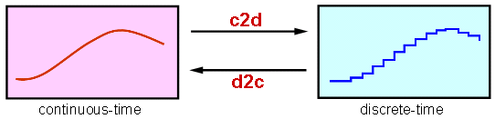
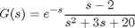
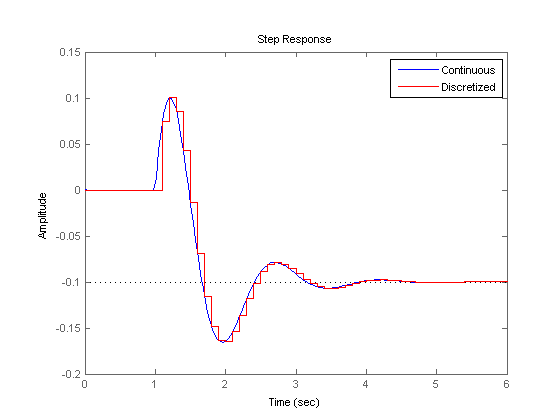
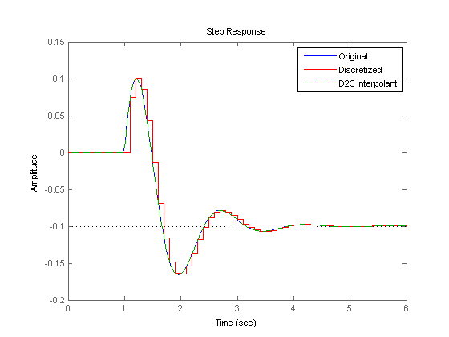
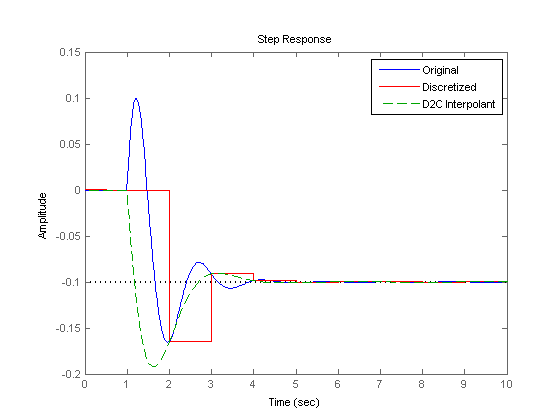
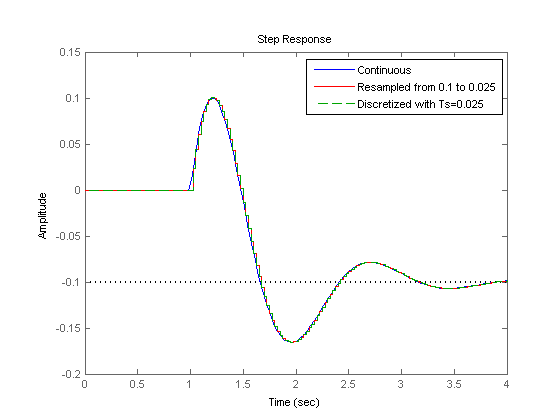

Discretizing and Resampling Models
This demo showcases the commands for continuous/discrete, discrete/continuous, and discrete/discrete conversions.
Contents
Related Commands
Control System Toolbox™ offers extensive support for discretization and resampling of linear systems including:
- c2d discretizes continuous-time models
- d2c compute continuous-time extensions of discrete-time models
- d2d resamples discrete-time models.
Several algorithms are available to perform these operations, including:
- Zero-order hold
- First-order hold
- Impulse invariant
- Tustin
- Matched poles/zeros.

Continuous/Discrete Conversion
For example, consider the second-order system with delay:

To compute its zero-order hold (ZOH) discretization with sampling rate of 10 Hz, type
G = tf([1 -2],[1 3 20],'inputdelay',1); Ts = 0.1; % sampling interval Gd = c2d(G,Ts)
Transfer function:
0.07462 z - 0.09162
z^(-10) * ----------------------
z^2 - 1.571 z + 0.7408
Sampling time: 0.1
Compare the continuous and discrete step responses:
step(G,'b',Gd,'r') legend('Continuous','Discretized')
Discrete/Continuous Conversion
Conversely, you can use d2c to compute a continuous-time "interpolant" for a given discrete-time system. Starting with the discretization Gd computed above, convert it back to continuous and compare with the original model G:
Gc = d2c(Gd); step(G,'b',Gd,'r',Gc,'g--') legend('Original','Discretized','D2C Interpolant')
The two continuous-time responses match perfectly. You may not always obtain a perfect match especially when your sampling interval Ts is too large and aliasing occurs during discretization:
Ts = 1; % 10 times larger than previously Hd = c2d(G,Ts); Hc = d2c(Hd); step(G,'b',Hd,'r',Hc,'g--',10) legend('Original','Discretized','D2C Interpolant')
Resampling of Discrete-Time Systems
Resampling consists of changing the sampling interval of a discrete-time system. This operation is performed with d2d. For example, consider the 10 Hz discretization Gd of our original continuous-time model G. You can resample it at 40 Hz using:
Gr = d2d(Gd,0.025)
Transfer function:
0.02343 z - 0.02463
z^(-40) * ----------------------
z^2 - 1.916 z + 0.9277
Sampling time: 0.025
Compare this with a direct discretization at 40 Hz:
step(G,'b',Gr,'r',c2d(G,0.025),'g--',4) legend('Continuous','Resampled from 0.1 to 0.025','Discretized with Ts=0.025')
Notice that both approaches lead to the same answer.
Which Algorithm and Sampling Rate to Choose?
See the demo entitled "Discretizing a Notch Filter" for more details on how the choice of algorithm and sampling rate affect the discretization accuracy.